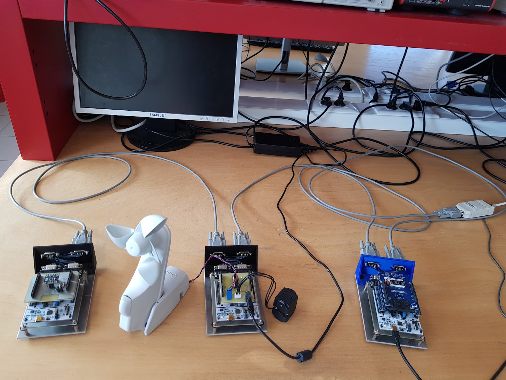

Sensor Network

Group project with the goal of managing 6 differents sensors capable of measuring: wind speed, humidity, air pressure, light intensity, distance and movement
Skill learned: Signal transfer, Interface creation, Interpretation of raw data